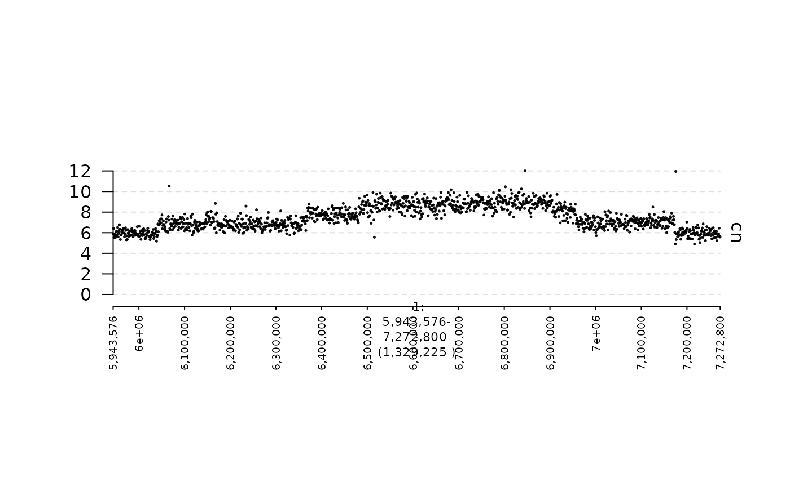

../../../../groups/imielinski_lab/home/zchoo/git/gTrack/vignettes/quickstart.rmd
quickstart.rmdThis is a short demo that explains how to create and plot gTracks.
gTracks can be created from GRanges, GRangesList, and Matrix objects. In addition, we have written a few R packages (gGnome and GxG) in which objects include a gTrack constructor (usually invoked by calling the $gt or $gtrack methods).
GRanges can be used as the starting point for creating scatter plots, bar plots, and line plots. The x-coordinate of each data point in these plots is specified by the genomic position, while the y-coordinate is stored in a user-defined metadata column of the GRanges object.
In this example, we will create gTracks to plot read depth in 1 Kbp genomic intervals.
In this first example, we will create a scatter plot. The (normalized) read depth is contained in a metadata column called cn. We need to specify this column name in the argument y.field when creating our gTrack. In addition, to create a scatter plot, we need to set the argument circles to TRUE. The parameter lwd.border controls the size of the points in the scatter plot.
coverage.gr = readRDS(system.file("extdata", "ovcar.subgraph.coverage.rds", package = "gTrack"))
coverage.gt = gTrack(coverage.gr, y.field = "cn", circles = TRUE, lwd.border = 0.2)
## specify genomic region that will be plotted
fp = parse.gr("1:6043576-7172800")
plot(coverage.gt, fp + 1e5)